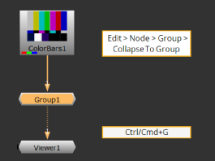
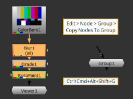
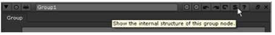

可以使用组节点在单个节点内嵌套多个节点。
| 1。 | 选择要在组节点内嵌套的所有节点。 |
| 2. | 如果要用组节点替换原始节点，请右键单击并选择 编辑 > 节点 > 集团 > 折叠到组 (或按 Ctrl / Cmd + G 在节点图上)。 |
如果除了组节点之外，还希望将原始节点保留在布局中，请单击鼠标右键并选择 编辑 > 节点 > 集团 > 将节点复制到组 (或按 Ctrl / Cmd Alt 转变 G 在节点图上)。
|
 |
 |
选定的节点嵌套到一个组中。组节点的内部结构显示在打开的单独选项卡上。
提示: 作为替代 编辑 > 节点 > 集团 > 折叠到组 ,您也可以选择 其他 > 集团 从工具栏或节点图右键单击菜单。
在组节点的控件中，单击 S 右上角的按钮 (显示的缩写)。

将打开一个包含嵌套节点的新选项卡。
| 1。 | 在节点图中选择组节点。 |
| 2. | 选择 编辑 > 节点 > 集团 > 展开组 (或按 Ctrl / Cmd + Alt + G )。 |
组节点被嵌套在其中的节点替换。
OR
| 1。 | 在组节点的控件中，单击 S 右上角的按钮。 |
将打开一个包含嵌套节点的新选项卡。
| 2. | 将新选项卡中的节点复制到脚本中。如果要锁定分组节点之间的连接，以便在复制粘贴操作期间不会意外断开连接，请检查 锁定所有连接 在组节点的控件中。 |
| 3. | 从脚本中删除不必要的组节点。 |
|
|